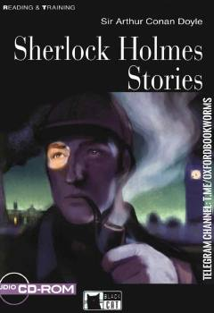

SHSherlok Xolms haqidagi ingliz tilini o'rganuvchilar uchun moslashtirilgan qiziqarli detektiv hikoyalar to'plami.
Ushbu kitob Arthur Conan Doylning mashhur detektivi Sherlok Xolms haqidagi ikkita hikoyani o'z ichiga oladi. Nashr ingliz tilini o'rganuvchilar uchun maxsus moslashtirilgan bo'lib, matn tushunishni osonlashtiradigan mashqlar va izohlar bilan boyitilgan.